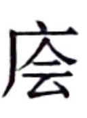

史记卷三十
平准书第八
汉 兴，接秦 之獘，丈夫从军旅，老弱转粮饷，作业剧而财匮，自天子不能具钧驷，而将相或乘牛车，齐民无藏盖。于是为秦 钱重难用，更令民铸钱，一黄金一斤，约法省禁。而不轨逐利之民，蓄积馀业以稽市物，物踊腾粜，米至石万钱，马一匹则百金。
天下已平，高祖 乃令贾人不得衣丝乘车，重租税以困辱之。孝惠 、高后 时，为天下初定，复弛商贾之律，然市井之子孙亦不得仕宦为吏。量吏禄，度官用，以赋于民。而山川园池市井租税之入，自天子以至于封君汤沐邑，皆各为私奉养焉，不领于天下之经费。漕转山东 粟，以给中都官，岁不过数十万石。
至孝文 时，荚钱益多，轻，乃更铸四铢钱，其文为“半两”，令民纵得自铸钱。故吴 ，诸侯也，以即山铸钱，富埒天子，其后卒以叛逆。邓通 ，大夫也，以铸钱财过王者。故吴 、邓氏 钱布天下，而铸钱之禁生焉。
匈奴 数侵盗北边，屯戍者多，边粟不足给食当食者。于是募民能输及转粟于边者拜爵，爵得至大庶长。
孝景 时，上郡 以西旱，亦复修卖爵令，而贱其价以招民；及徒复作，得输粟县官以除罪。益造苑马以广用，而宫室列观舆马益增修矣。
至今上即位数岁，汉 兴七十馀年之间，国家无事，非遇水旱之灾，民则人给家足，都鄙廪庾皆满，而府库馀货财。京师之钱累巨万，贯朽而不可校。太仓之粟陈陈相因，充溢露积于外，至腐败不可食。众庶街巷有马，阡陌之间成群，而乘字牝者傧而不得聚会。守闾阎者食粱肉，为吏者长子孙，居官者以为姓号。故人人自爱而重犯法，先行义而后绌耻辱焉。当此之时，网疏而民富，役财骄溢，或至兼并豪党之徒，以武断于乡曲。宗室有土公卿大夫以下，争于奢侈，室庐舆服僭于上，无限度。物盛而衰，固其变也。
自是之后，严助 、朱买臣 等招来东瓯 ，事两越 ，江淮 之间萧然烦费矣。 唐蒙 、司马相如 开路西南夷 ，凿山通道千馀里，以广巴蜀 ，巴蜀 之民罢焉。彭吴 贾灭朝鲜 ，置沧海之郡 ，则燕齐 之间靡然发动。及王恢 设谋马邑 ，匈奴 绝和亲，侵扰北边，兵连而不解，天下苦其劳，而干戈日滋。行者赍，居者送，中外骚扰而相奉，百姓抏獘以巧法，财赂衰耗而不赡。入物者补官，出货者除罪，选举陵迟，廉耻相冒，武力进用，法严令具。兴利之臣自此始也。
其后汉 将岁以数万骑出击胡 ，及车骑将军卫青 取匈奴河南 地，筑朔方 。当是时，汉 通西南夷 道，作者数万人，千里负担馈粮，率十馀钟致一石，散币于邛僰 以集之。数岁道不通，蛮夷因以数攻，吏发兵诛之。悉巴蜀 租赋不足以更之，乃募豪民田南夷 ，入粟县官，而内受钱于都内。东置沧海之郡 ，人徒之费拟于南夷 。又兴十万馀人筑卫朔方 ，转漕甚辽远，自山东 咸被其劳，费数十百巨万，府库益虚。乃募民能入奴婢得以终身复，为郎增秩，及入羊为郎，始于此。
其后四年，而汉
遣大将将六将军，军十馀万，击右贤王，获首虏万五千级。明年，大将军将六将军仍再出击胡
，得首虏万九千级。捕斩首虏之士受赐黄金二十馀万斤，虏数万人皆得厚赏，衣食仰给县官；而汉
军之士马死者十馀万，兵甲之财转漕之费不与焉。于是大农陈藏钱经耗，赋税既竭，犹不足以奉战士。有司言：“天子曰‘朕闻五帝
之教不相复而治，禹汤
之法不同道而王，所由殊路，而建德一也。北边未安，朕甚悼之。日者，大将军攻匈奴
，斩首虏万九千级，留 无所食。议令民得买爵及赎禁锢免减罪’。请置赏官，命曰武功爵。级十七万，凡直三十馀万金。诸买武功爵官首者试补吏，先除；千夫如五大夫；其有罪又减二等；爵得至乐卿：以显军功。”军功多用越等，大者封侯卿大夫，小者郎吏。吏道杂而多端，则官职耗废。
无所食。议令民得买爵及赎禁锢免减罪’。请置赏官，命曰武功爵。级十七万，凡直三十馀万金。诸买武功爵官首者试补吏，先除；千夫如五大夫；其有罪又减二等；爵得至乐卿：以显军功。”军功多用越等，大者封侯卿大夫，小者郎吏。吏道杂而多端，则官职耗废。
自公孙弘 以春秋 之义绳臣下取汉 相，张汤 用峻文决理为廷尉，于是见知之法生，而废格沮诽穷治之狱用矣。其明年，淮南 、衡山 、江都王 谋反迹见，而公卿寻端治之，竟其党与，而坐死者数万人，长吏益惨急而法令明察。
当是之时，招尊方正贤良文学之士，或至公卿大夫。公孙弘 以汉 相，布被，食不重味，为天下先。然无益于俗，稍骛于功利矣。
其明年，骠骑仍再出击胡 ，获首四万。其秋，浑邪王 率数万之众来降，于是汉 发车二万乘迎之。既至，受赏，赐及有功之士。是岁费凡百馀巨万。
初，先是往十馀岁河 决观 ，梁楚 之地固已数困，而缘河 之郡堤塞河 ，辄决坏，费不可胜计。其后番係 欲省底柱 之漕，穿汾 、河 渠以为溉田，作者数万人；郑当时 为渭 漕渠回远，凿直渠自长安 至华阴 ，作者数万人；朔方 亦穿渠，作者数万人：各历二三期，功未就，费亦各巨万十数。
天子为伐胡 ，盛养马，马之来食长安 者数万匹，卒牵掌者关中 不足，乃调旁近郡。而胡 降者皆衣食县官，县官不给，天子乃损膳，解乘舆驷，出御府禁藏以赡之。
其明年，山东 被水灾，民多饥乏，于是天子遣使者虚郡国仓 以振贫民。犹不足，又募豪富人相贷假。尚不能相救，乃徙贫民于关以西，及充朔方 以南新秦中 ，七十馀万口，衣食皆仰给县官。数岁，假予产业，使者分部护之，冠盖相望。其费以亿计，不可胜数。
于是县官大空，而富商大贾或
财役贫，转毂百数，废居居邑，封君皆低首仰给。冶铸煮盐，财或累万金，而不佐国家之急，黎民重困。于是天子与公卿议，更钱造币以赡用，而摧浮淫并兼之徒。是时禁苑有白鹿而少府多银锡。自孝文
更造四铢钱，至是岁四十馀年，从建元
以来，用少，县官往往即多铜山而铸钱，民亦间盗铸钱，不可胜数。钱益多而轻，物益少而贵。有司言曰：“古者皮币，诸侯以聘享。金有三等，黄金为上，白金为中，赤金为下。今半两钱法重四铢，而奸或盗摩钱里取 ，钱益轻薄而物贵，则远方用币烦费不省。”乃以白鹿皮方尺，缘以藻缋，为皮币，直四十万。王侯宗室朝觐聘享，必以皮币荐璧，然后得行。
，钱益轻薄而物贵，则远方用币烦费不省。”乃以白鹿皮方尺，缘以藻缋，为皮币，直四十万。王侯宗室朝觐聘享，必以皮币荐璧，然后得行。
又造银锡为白金。以为天用莫如龙，地用莫如马，人用莫如龟，故白金三品：其一曰重八两，圜之，其文龙，名曰“白选”，直三千；二曰以重差小，方之，其文马，直五百；三曰复小，撱之，其文龟，直三百。令县官销半两钱，更铸三铢钱，文如其重。盗铸诸金钱罪皆死，而吏民之盗铸白金者不可胜数。
于是以东郭咸阳 、孔仅 为大农丞，领盐铁事；桑弘羊 以计算用事，侍中。咸阳 ，齐 之大煮盐，孔仅 ，南阳 大冶，皆致生累千金，故郑当时 进言之。弘羊 ，雒阳 贾人子，以心计，年十三侍中。故三人言利事析秋豪矣。
法既益严，吏多废免。兵革数动，民多买复及五大夫，征发之士益鲜。于是除千夫五大夫为吏，不欲者出马；故吏皆適令伐棘上林 ，作昆明池 。
其明年，大将军、骠骑大出击胡 ，得首虏八九万级，赏赐五十万金，汉 军马死者十馀万匹，转漕车甲之费不与焉。是时财匮，战士颇不得禄矣。
有司言三铢钱轻，易奸诈，乃更请诸郡国铸五铢钱，周郭其下，令不可磨取
焉。
大农上盐铁丞孔仅 、咸阳 言：“山海，天地之藏也，皆宜属少府，陛下不私，以属大农佐赋。愿募民自给费，因官器作煮盐，官与牢盆。浮食奇民欲擅管山海之货，以致富羡，役利细民。其沮事之议，不可胜听。敢私铸铁器煮盐者，钛左趾，没入其器物。郡不出铁者，置小铁官，便属所在县。”使孔仅 、东郭咸阳 乘传举行天下盐铁，作官府，除故盐铁家富者为吏。吏道益杂，不选，而多贾人矣。
商贾以币之变，多积货逐利。于是公卿言：“郡国颇被灾害，贫民无产业者，募徙广饶之地。陛下损膳省用，出禁钱以振元元，宽贷赋，而民不齐出于南亩，商贾滋众。贫者畜积无有，皆仰县官。异时算轺车贾人缗钱皆有差，请算如故。诸贾人末作贳贷卖买，居邑稽诸物，及商以取利者，虽无市籍，各以其物自占，率缗钱二千而一算。诸作有租及铸，率缗钱四千一算。非吏比者三老、北边骑士，轺车以一算；商贾人轺车二算；船五丈以上一算。匿不自占，占不悉，戍边一岁，没入缗钱。有能告者，以其半畀之。贾人有市籍者，及其家属，皆无得籍名田，以便农。敢犯令，没入田僮。”
天子乃思卜式 之言，召拜式 为中郎，爵左庶长，赐田十顷，布告天下，使明知之。
初，卜式 者，河南 人也，以田畜为事。亲死，式 有少弟，弟壮，式 脱身出分，独取畜羊百馀，田宅财物尽予弟。式 入山牧十馀岁，羊致千馀头，买田宅。而其弟尽破其业，式 辄复分予弟者数矣。是时汉 方数使将击匈奴 ，卜式 上书，愿输家之半县官助边。天子使使问式 ：“欲官乎？”式 曰：“臣少牧，不习仕宦，不愿也。”使问曰：“家岂有冤，欲言事乎？”式 曰：“臣生与人无分争。式 邑人贫者贷之，不善者教顺之，所居人皆从式 ，式 何故见冤于人！无所欲言也。”使者曰：“苟如此，子何欲而然？”式 曰：“天子诛匈奴 ，愚以为贤者宜死节于边，有财者宜输委，如此而匈奴 可灭也。”使者具其言入以闻。天子以语丞相弘 。弘 曰：“此非人情。不轨之臣，不可以为化而乱法，愿陛下勿许。”于是上久不报式 ，数岁，乃罢式 。式 归，复田牧。岁馀，会军数出，浑邪王 等降，县官费众，仓府空。其明年，贫民大徙，皆仰给县官，无以尽赡。卜式 持钱二十万予河南 守，以给徙民。河南 上富人助贫人者籍，天子见卜式 名，识之，曰“是固前而欲输其家半助边”，乃赐式 外繇四百人。式 又尽复予县官。是时富豪皆争匿财，唯式 尤欲输之助费。天子于是以式 终长者，故尊显以风百姓。
初，式
不愿为郎。上曰：“吾有羊上林
中，欲令子牧之。”式
乃拜为郎，布衣 而牧羊。岁馀，羊肥息。上过见其羊，善之。式
曰：“非独羊也，治民亦独是也。以时起居；恶者辄斥去，毋令败群。”上以式
为奇，拜为缑氏
令试之，缑氏
便之。迁为成皋
令，将漕最。上以为式
朴忠，拜为齐王
太傅。
而牧羊。岁馀，羊肥息。上过见其羊，善之。式
曰：“非独羊也，治民亦独是也。以时起居；恶者辄斥去，毋令败群。”上以式
为奇，拜为缑氏
令试之，缑氏
便之。迁为成皋
令，将漕最。上以为式
朴忠，拜为齐王
太傅。
而孔仅 之使天下铸作器，三年中拜为大农，列于九卿。而桑弘羊 为大农丞，管诸会计事，稍稍置均输以通货物矣。
始令吏得入谷补官，郎至六百石。
自造白金五铢钱后五岁，赦吏民之坐盗铸金钱死者数十万人。其不发觉相杀者，不可胜计。赦自出者百馀万人。然不能半自出，天下大抵无虑皆铸金钱矣。犯者众，吏不能尽诛取，于是遣博士褚大 、徐偃 等分曹循行郡国，举兼并之徒守相为利者。而御史大夫张汤 方隆贵用事，减宣 、杜周 等为中丞，义纵 、尹齐 、王温舒 等用惨急刻深为九卿，而直指夏兰 之属始出矣。
而大农颜异
诛。初，异
为济南
亭长，以廉直稍迁至九卿。上与张汤
既造白鹿皮币，问异
。异
曰：“今王侯朝贺以苍璧，直数千，而其皮荐反四十万，本末不相称。”天子不说。张汤
又与异有郤，及有人告异
以它议，事下张汤
治异
。异
与客语，客语初令下有不便者，异
不应，微反唇。汤
奏当异
九卿见令不便，不入言而腹诽，论死。自是之后，有腹诽之法比，而公卿大夫多谄谀取容矣。
天子既下缗钱令而尊卜式 ，百姓终莫分财佐县官，于是告缗钱纵矣。
郡国多奸铸钱，钱多轻，而公卿请令京师铸钟官赤侧，一当五，赋官用非赤侧不得行。白金稍贱，民不宝用，县官以令禁之，无益。岁馀，白金终废不行。
是岁也，张汤 死而民不思。
其后二岁，赤侧钱贱，民巧法用之，不便，又废。于是悉禁郡国无铸钱，专令上林 三官铸。钱既多，而令天下非三官钱不得行，诸郡国所前铸钱皆废销之，输其铜三官。而民之铸钱益少，计其费不能相当，唯真工大奸乃盗为之。
卜式 相齐 ，而杨可 告缗遍天下，中家以上大抵皆遇告。杜周 治之，狱少反者。乃分遣御史廷尉正监分曹往，即治郡国缗钱，得民财物以亿计，奴婢以千万数，田大县数百顷，小县百馀顷，宅亦如之。于是商贾中家以 上大率破，民偷甘食好衣，不事畜藏之产业，而县官有盐铁缗钱之故，用益饶矣。
益广关，置左右辅。
初，大农管盐铁官布多，置水衡，欲以主盐铁；及杨可 告缗钱，上林 财物众，乃令水衡主上林 。上林 既充满，益广。是时越 欲与汉 用船战逐，乃大修昆明池 ，列观环之。治楼船，高十馀丈，旗帜加其上，甚壮。于是天子感之，乃作柏梁台 ，高数十丈。宫室之修，由此日丽。
乃分缗钱诸官，而水衡、少府、大农、太仆各置农官，往往即郡县比没入田田之。其没入奴婢，分诸苑养狗马禽兽，及与诸官。诸官益杂置多，徒奴婢众，而下河 漕度四百万石，及官自籴乃足。
所忠
言：“世家子弟富人或斗鸡走狗马，弋猎博戏，乱齐民。”乃征诸犯令，相引数千人，命曰“株送徒”。入财者得补郎，郎选衰矣。
是时山东 被河 灾，及岁不登数年，人或相食，方一二千里。天子怜之，诏曰：“江南 火耕水耨，令饥民得流就食江淮 间，欲留，留处。”遣使冠盖相属于道，护之，下巴蜀 粟以振之。
其明年，天子始巡郡国。东度河 ，河东 守不意行至，不辨，自杀。行西逾陇 ，陇西 守以行往卒，天子从官不得食，陇西 守自杀。于是上北出萧关 ，从数万骑，猎新秦中 ，以勒边兵而归。新秦中 或千里无亭徼，于是诛北地 太守以下，而令民得畜牧边县，官假马母，三岁而归，及息什一，以除告缗，用充仞新秦中 。
既得宝鼎，立后土
、太一祠
，公卿议封禅事，而天下郡国皆豫治道桥，缮故宫，及当驰道县，县治官储，设供具，而望以待幸。
其明年，南越 反，西羌 侵边为桀。于是天子为山东 不赡，赦天下囚，因南方楼船卒二十馀万人击南越 ，数万人发三河 以西骑击西羌 ，又数万人度河 筑令居 。初置张掖 、酒泉郡 ，而上郡 、朔方 、西河 、河西 开田官，斥塞卒六十万人戍田之。中国缮道馈粮，远者三千，近者千馀里，皆仰给大农。边兵不足，乃发武库工官兵器以赡之。车骑马乏绝，县官钱少，买马难得，乃著令，令封君以下至三百石以上吏，以差出牝马天下亭，亭有畜牸马，岁课息。
齐 相卜式 上书曰：“臣闻主忧臣辱。南越 反，臣愿父子与齐 习船者往死之。”天子下诏曰：“卜式 虽躬耕牧，不以为利，有馀辄助县官之用。今天 下不幸有急，而式奋愿父子死之，虽未战，可谓义形于内。赐爵关内侯，金六十斤，田十顷。”布告天下，天下莫应。列侯以百数，皆莫求从军击羌 、越 。至酎，少府省金，而列侯坐酎金失侯者百馀人。乃拜式 为御史大夫。
式 既在位，见郡国多不便县官作盐铁，铁器苦恶，贾贵，或强令民卖买之。而船有算，商者少，物贵，乃因孔仅 言船算事。上由是不悦卜式 。
汉
连兵三岁，诛羌
，灭南越
，番禺
以西至蜀
南者置初郡十七，且以其故俗治，毋赋税。南阳
、汉中
以往郡，各以地比给初郡吏卒奉食币物，传车马被具。而初郡时时小反，杀吏，汉
发南方吏卒往诛之，间岁万馀人，费皆仰给大农。大农以均输调盐铁助赋，故能赡之。然兵所过县，为以訾给毋乏而已，不敢言擅赋法矣。
其明年，元封 元年，卜式 贬秩为太子太傅。而桑弘羊 为治粟都尉，领大农，尽代仅 管天下盐铁。弘羊 以诸官各自市，相与争，物故腾跃，而天下赋输或不偿其僦费，乃请置大农部丞数十人，分部主郡国，各往往县置均输盐铁官，令远方各以其物贵时商贾所转贩者为赋，而相灌输。置平准于京师，都受天下委输。召工官治车诸器，皆仰给大农。大农之诸官尽笼天下之货物，贵即卖之，贱则买之。如此，富商大贾无所牟大利，则反本，而万物不得腾踊。故抑天下物，名曰“平准”。天子以为然，许之。于是天子北至朔方 ，东到太山 ，巡海上，并北边以归。所过赏赐，用帛百馀万匹，钱金以巨万计，皆取足大农。
弘羊 又请令吏得入粟补官，及罪人赎罪。令民能入粟甘泉 各有差，以复终身，不告缗。他郡各输急处，而诸农各致粟，山东 漕益岁六百万石。一岁之中，太仓、甘泉 仓满。边馀谷诸物均输帛五百万匹。民不益赋而天下用饶。于是弘羊 赐爵左庶长，黄金再百斤焉。
是岁小旱，上令官求雨。卜式
言曰：“县官当食租衣税而已，今弘羊
令吏坐市列肆，贩物求利。亨弘羊
，天乃雨。”
太史公 曰：农工商交易之路通，而龟贝金钱刀布之币兴焉。所从来久远，自高辛氏 之前尚矣，靡得而记云。故书 道唐虞 之际，诗 述殷周 之世，安宁则长庠序，先本绌末，以礼义防于利；事变多故而亦反是。是以物盛则衰，时极而转，一质一文，终始之变也。禹贡 九州，各因其土地所宜，人民所多少而纳职焉。汤武 承獒易变，使民不倦，各兢兢所以为治，而稍陵迟衰微。齐桓公 用管仲 之谋，通轻重之权，徼山海之业，以朝诸侯，用区区之 齐 显成霸名。魏 用李克 ，尽地力，为强君。自是之后，天下争于战国，贵诈力而贱仁义，先富有而后推让。故庶人之富者或累巨万，而贫者或不厌糟糠；有国强者或并群小以臣诸侯，而弱国或绝祀而灭世。以至于秦 ，卒并海内。虞夏 之币，金为三品，或黄，或白，或赤；或钱，或布，或刀，或龟贝。及至秦 ，中一国之币为二等，黄金以溢名，为上币；铜钱识曰半两，重如其文，为下币。而珠玉、龟贝、银锡之属为器饰宝藏，不为币。然各随时而轻重无常。于是外攘夷狄，内兴功业，海内之士力耕不足粮饷，女子纺绩不足衣服。古者尝竭天下之资财以奉其上，犹自以为不足也。无异故云，事势之流，相激使然，曷足怪焉。